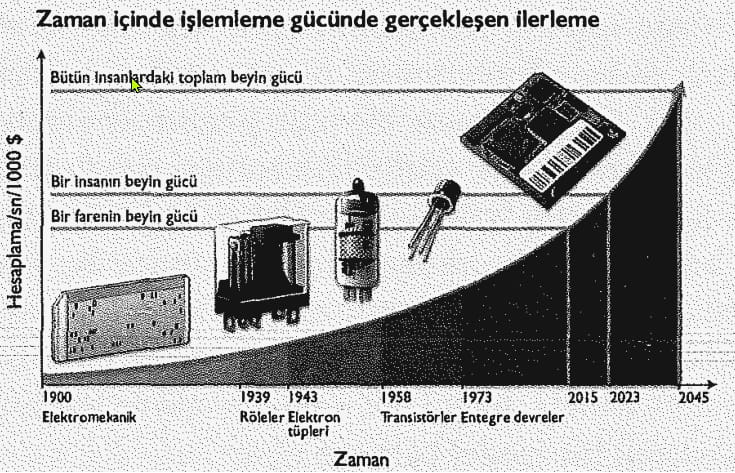
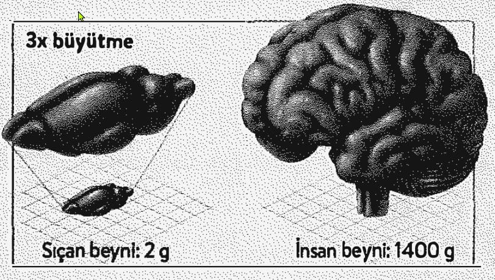

İnsan vücudu, karmaşıklık ve güzelliğiyle bir başyapıt; birbiriyle uyum içinde çalışan kırk trilyon hücrenin hayat verdiği bir senfonidir. Ama vücudun tabi olduğu bazı sınırlamalar da vardır. Duyularınız deneyimlerinize, vücudunuz yapabileceklerinize sınırlar koyar. Ama ya beyin farklı türden girdileri de algılayıp farklı türden kol ve bacaklarını da denetleyebilse böylece içinde yaşadığımız gerçekliği genişletebilseydi? İnsanlık tarihinin öyle bir noktasındayız ki, biyoloji ve teknolojinin evliliği beynin sınırlamalarının ötesine geçebilir. Kendi donanımınızı ele geçirip geleceğe doğru farklı bir yol çizebiliriz. Böyle bir değişimin, insan olmanın anlamını da temelden değiştirmesi bekleniyor.
Son 100.000 yıldır, bir tür olarak az buz yol kat etmedik: Buldukları çerçöple hayatta kalmaya çalışan avcı-toplayıcılardan, kendi kaderini elinde tutan, üyeleri birbiriyle üst düzeyde bağlantı halindeki gezegen fatihlerine dönüştük. Bugün, atalarımızın hayal bile edemeyeceği gündelik deneyimlerin tadına varıyoruz. Dayalı döşeli mağaralarımıza istediğimizde su sağlayacak temiz nehirlerimiz, elimizdeyse boyutları irice bir taşınkini geçmediği halde dünyanın bilgisini içeren aygıtlarımız var. Bulutların üstünü, gezegenimizin kavisli yüzeyini uzaydan düzenli olarak görebiliyoruz. Dünyanın öbür ucuna seksen milisaniyede mesajlar gönderiyor, uzayda dolanıp duran bir insan kolonisine ulaştırmak üzere, saniyede altmış megabit hızla dosya yüklüyoruz. İşimize arabayla gitmek gibi sıradan bir eylemi gerçekleştirirken bile, biyolojinin büyük başyapıtlarını (çitalar gibi) geride bırakan ortalama hızlarla ilerliyoruz. Türümüzün bu büyük başarısını borçlu olduğumuz şeyse, kafatasımızın içinde saklı duran bir buçuk kiloluk madde kitlesinin sıra dışı özellikleri.
İnsan beyninde nasıl bir özellik vardı da bu yolculuk mümkün oldu? Eğer başarılarımızın ardındaki sırları aydınlatabilirsek, belki de beynin gücünü dikkatli ve anlamlı bir biçimde yönlendirebilir, insanın hikayesinde yeni bir bölüm yazmaya başlayabiliriz. Önümüzdeki bin yıl bize neler getirecek acaba? Uzak gelecekte insan ırkı neye benzeyecek?
Hem geçmiş başarımızı hem de gelecekteki fırsatları anlamanın sırrı, beynin plastisite adı verilen muazzam uyarlanma becerisinde yatar. 2. Bölüm'de de gördüğümüz gibi bu özellik, kendimizi hangi ortamda bulursak bulalım, hayatta kalmamızı sağlayacak yerel ayrıntıları (yerel dil, yerel çevre baskıları ya da yerel kültür özellikleri gibi) yakalayıp kullanmamızı mümkün kılmıştır.
Beyin plastisitesi, kendi donanımımız üzerinde uyarlamalar yapmak için gerekli kapıları araladığından, geleceğimizin de anahtarıdır. Beynin tam olarak ne ölçüde esnek bir bilgisayımsal aygıt olduğunu anlamaya çalışarak işe başlayabiliriz. Cameron Mott isimli genç bir kızın durumunu ele alalım. Cameron, dört yaşındayken şiddetli nöbetler geçirmeye başlamıştı. Nöbetler tehlikeli boyuttaydı. Durup dururken bir anda yere düşebiliyor, bu nedenle de sürekli kask takmak zorunda kalıyordu. Cameron'a ender görülen ve oldukça da sarsıcı etkileri olan Rasmussen ensefaliti teşhisi konması fazla zaman almadı. Cameron ile ilgilenen nörologlar bu sara türünün önce felce, sonunda da ölüme yol açacağını biliyorlardı; bu nedenle ciddi sonuçları olabilecek, iddialı bir ameliyat önerdiler. 2007 yılında, beyin cerrahlarından oluşan bir ekip neredeyse on iki saat süren bir ameliyatla Cameron'un bir beyin yarım küresini olduğu gibi çıkardı.
Beynin yarısının çıkarılması, uzun dönemde ne tür sonuçlar doğuracaktı? Anlaşıldığı üzere, şaşırtıcı ölçüde hafif olacaktı bu etkiler. Cameron'un vücudunun bir yarısı, diğerinden daha güçsüz; ancak bunun dışında onu sınıfındaki diğer çocuklardan ayırt etmek pek mümkün değil. Ne kullanılan dili, ne de müziği, matematiği, hikayeleri anlamada sorun yaşıyor. Okulda iyi bir öğrenci olmanın yanında, spor etkinliklerine de katılıyor.
Böyle bir şey nasıl mümkün olabildi? Mesele, Cameron'un beyninin bir yarısına ihtiyaç olmaması değil, kalan yarısının eksik işlevleri devralmak üzere dinamik biçimde yeniden düzenlenmesi ve bütün işlemlerin normal beyin hacminin yarısına sıkıştırılmasıydı. Cameron'un iyileşmesi, beynin harikulade bir yeteneğini vurgular: Beyin, eldeki girdiler, çıktılar ve yapılacak işlere uyum sağlamak üzere, devrelerini yeni düzenlemelere tabi tutabilir.
Kritik önem taşıyan bu yöntem, beyni dijital bilgisayarlardaki donanımdan temelde farklı kılar. Beyin, sahip olduğu "canlı" donanımla kendi devre sistemini kendisi düzenler. Yetişkin beyni bir çocuğunki kadar esnek olmasa da, uyum sağlama ve değişim yeteneğini şaşırtıcı ölçüde korumuş durumdadır. Daha önceki bölümlerde de gördüğümüz gibi ister Londra haritasını ezberlemek, ister kap dizmek olsun, ne zaman yeni bir şey öğrensek beyin kendini değiştirir. İşte beynin bu özelliği, yani plastisite, biyolojimizle teknoloji arasında yeni bir evliliği mümkün kılar.
Çeşitli aygıtları vücudumuza doğrudan bağlamada giderek daha iyi hale gelmekteyiz. Farkında olmasanız da, şu anda yüz binlerce insan yapay işitme ve görme sistemlerinden yararlanıyor.
Koklear implant adı verilen cihazda, bir dış mikrofon ses sinyalini dijital hale getirerek işitme sinirine iletir. Retina implantları da benzer biçimde, kameradan aldıkları sinyali dijital bir sinyale dönüştürür ve bunu gözün arkasındaki görme sinirine bağlı bir elektrot kafesinden içeri gönderirler. Bu cihazlar, dünyadaki işitme ve görme engelli birçok kişinin duyularını onlara yeniden kazandırmıştır.
Bir zamanlar, bu tür yaklaşımların işe yarayıp yaramayacağı konusunda soru işaretleri vardı. Birçok araştırmacı, ilk ortaya çıktıklarında bu teknolojilere kuşkuyla yaklaşmıştı: Beyin ağları öylesine büyük bir kesinlik ve özgüllükle düzenlenmişti ki, metal elektrotlarla biyolojik hücreler arasında anlamlı bir diyalog kurulup kurulamayacağı belli değildi. Beyin biyolojik kökenli olmayan bu kaba sinyalleri anlayabilecek miydi yoksa şaşkına mı dönecekti?
Bir koklear implant, kulağın biyolojisinde yaşanan sorunları görmezden gelerek, işitsel sinyalleri doğrudan hasarsız işitme sinirine iletir. Bu sinir, elektriksel uyarıları çözümlenmek üzere işitme korteksine gönderen bir veri kablosu gibidir. implant, dış dünyadan aldığı sesleri işitme sinirine on altı küçük elektrot aracılığıyla gönderir. işitme deneyimi hemen başlamaz; çünkü implantı kullanan insanların, beyni besleyen bu sinyallerin lehçesini yorumlamayı öğrenmeleri zaman alır. Kendisi de bu implanttan yararlanan Michael Chorost, deneyimlerini şöyle anlatıyor:
"Ameliyattan bir ay sonra cihaz çalıştırıldığında, duyduğum ilk cümle şöyle bir şeydi:"Zzzzzz szz szvizz ur brfzzzzzz?" Beynim, bu yabancı sinyalleri yorumlamayı kademeli olarak öğrendi. "Zzzzzz szz szvizz ur brfzzzzzz?" çok geçmeden "What did you have for breakfast?" [Kahvaltıda ne yedin?] biçimini aldı. Aylar süren alıştırmalardan sonra telefonu yeniden kullanabilir, hatta gürültülü, barlar ve kafelerde bile çene çalabilir hale geldim."
Retina implantları da benzer ilkelerle çalışır. İmplantın küçücük elektrotları, fotoreseptör (ışık algılayıcı reseptör) tabakasının normal işlevlerini görmezden gelerek, çok küçük elektriksel etkinlik kıvılcımları gönderir. Bu implantlar çoğunlukla görme siniri hücrelerinin sağlam olup gözün arkasındaki fotoreseptörlerin bozulmaya uğradığı göz hastalıklarında kullanılırlar. implant tarafından gönderilen sinyaller görme sisteminin alıştığı sinyallerin bire bir aynısı olmasa bile, daha sonraki işlem kademeleri, görmeyi sağlamak için ihtiyaç duydukları bilgileri ayrıştırmayı öğrenebilirler.
Şimdi biliyoruz ki beyin, sinyalleri yorumlamayı zamanla öğrenir. Bu tür implantlara alışmak, beyin için biraz da yeni bir dil öğrenmek gibidir. Yabancı elektrik sinyalleri başlangıçta anlaşılmaz olacak, ama nöral ağlar sonunda gelen verilerdeki örüntüleri tanıyıp ayıracak hale gelecektir. Girdi sinyalleri kaba da olsa, beyin onlardan anlam çıkarmanın bir yolunu bulur. Başka duyulardan gelen verilerle karşılaştırmalar yaparak, sinyallerde örüntü arayışı içine girer. Gelen verilerde belirli bir yapının varlığı söz konusuysa o yapıyı diğerlerinden ayırır; birkaç hafta sonra ise gelen bilgiler anlam kazanmaya başlar. İmplantlar, doğal duyu organlarımızın verdiklerinden biraz farklı sinyaller verse de, beyin, ele geçirebildiği bilgiyle idare etmenin yolunu bulacaktır.
Beynin plastisite özelliği, yeni girdilerin de yorumlanmasına izin verdiğine göre, bu durum ne tür duyusal olanaklar sağlayabilir?
Temel duyulardan oluşmuş standart bir donanımla; işitme, dokunma, görme, koku, tat ve yanında denge, titreşim ve sıcaklık gibi başka duyulada geliriz dünyaya. Sahip olduğumuz algılayıcılar, çevremizden sinyalleri toplamamızı sağlayan kapılardır.
Ancak, birinci bölümde de gördüğümüz gibi, bu duyular çevremizdeki dünyanın yalnızca küçük bir kesitini deneyimlememize izin verir. İlgili algılayıcılara sahip almadığımız tüm diğer bilgi kaynakları ise bizim için görünmezdir.
Sahip olduğumuz duyusal kapıları çevresel tak-çalıştır aygıtlarına benzetirim. Burada önemli olan nokta, beynin veriyi nereden aldığını bilmemesi, üstelik bunu umursamamasıdır. Ne tür bilgi gelirse gelsin, beyin onunla ne yapacağını çözümlemeye çalışır. Bu çerçevede beyni genel amaçlı bir bilgisayım aygıtı olarak düşünürüm; çünkü neyle beslenirse onunla çalışır. Bu varsayım temelinde Tabiat Ana'nın da beynin işleyiş ilkelerini yalnızca bir kez icat etmesi yeterli olmuş, ondan sonra yeni girdi kanallarını tasarlamak için bol bol zamanı kalmıştı.
Nihai sonuç, bu kadar iyi tanıyıp sevdiğimiz bütün bu algılayıcıların, aslında devreye bir girip bir çıkabilen araçlardan ibaret olduğudur. Fişe bir kere taktınız mı, beyin hemen onları işlemeye başlar. Bu çerçevede, evrimin beyni sürekli olarak yeniden tasarlamasına gerek yoktur; bu süreci yalnızca çevresel aygıtlara uygulaması yeterlidir. Beyne düşen, bunlardan nasıl yararlanacağını bulmaktır.
Hayvanlar alemine göz attığınızda, hayvan beyinlerince kullanılan çevresel algılayıcıların inanılmaz bir çeşitlilik sergilediğini görürsünüz. Yılanlar ısı algılayıcıları taşırlar. Cam bıçak balıklarında ortamın elektrik alanındaki değişimleri yorumlamaya yarayan elektrik algılayıcıları, inek ve kuşlarda ise Dünya'nın manyetik alanına göre yönlenmelerini sağlayan manyetit bulunur. Hayvanlar morötesi ışığı da algılayabilirler. Filler çok uzun mesafelerdeki sesleri işitebilir, köpekler de zengin kokularla dolu bir gerçeklik deneyimi yaşarlar. Doğal seçilimin eritme potası, olabilecek en uç programlama atölyesidir; bu özellikler de genlerin dış dünyadaki bilgiyi iç dünyaya iletmek için bulduğu yollardan yalnızca birkaçıdır. Nihai sonuç, evrimin, gerçekliğin birçok farklı dilimini deneyimleyebilen bir beyin inşa etmiş olmasıdır.
Bütün bunlarla vurgulamak istediğim nokta şu ki, kullanageldiğimiz algılayıcılar öyle çok da temel ve özel nitelikli olmayabilir. Bunlar yalnızca karmaşık bir evrimsel baskılar tarihinden miras aldığımız özelliklerdir; onlara mahkum değilizdir.
Bu fikri ilkece destekleyen en temel kanıt, "duyusal değiştirim" (sensory substitution) adını alan kavramdan gelir. Bu kavram, duyusal bilginin alışılmadık duyusal kanallar aracılığıyla (örneğin, görmenin, dokunma aracılığıyla) iletildiği durumlar için kullanılır. Beyin, bu bilgiyle ne yapması gerektiğini bir şekilde çözümler; çünkü verilerin hangi yolla geldiği umurunda değildir.
Duyusal değiştirim kavramı, ilk bakışta bilim kurgu çağrışımı yapsa da, aslında oldukça yerleşik bir olgudur. Bununla ilgili ilk bulgular, Nature dergisinde 1969 yılında yayımlanmıştı. Nörobilimci Paul Bach-y-Rita, makalesinde görme engelli deney katılımcılarının, nesneleri "görmeyi" öğrenebildiklerini bildiriyordu; görsel bilgilerin onlara sıra dışı bir yolla verildiği durumlarda bile. Çalışmasında görme engelliler, üzerinde biraz değişiklik yapılmış bir dişçi koltuğuna oturtulmuş, bir kameradan akan görüntüler de sırtlarının alt kısmına basınç uygulayan bir dizi küçük pistonun dokunuşuyla bir örüntüye dönüştürülmüştü. Başka bir ifadeyle, kameranın önüne bir daire tutacak olursanız, katılımcı sırtında bir dairenin varlığını hissedecek, kameranın önündeki bir yüz ise, yine sırtında hissettiği bir yüze dönüşecekti. Şaşırtıcıdır ki, görme yetisini kaybetmiş insanlar, nesneleri yorumlamayı öğrenmiş, yaklaşmakta olan nesnelerin boyutça büyüdüğünü bile hissedebilmişlerdi. Bu insanlar, bir anlamda artık sırtları aracılığıyla görebilmekteydiler.
Bu, izleyen birçok duyusal değiştirim örneğinden yalnızca birincisidir. Yaklaşımın günümüzde yararlanılan uyarlamasında ise video akışı bir ses akışına, ya da alın veya dil yüzeyindeki bir dizi küçük şoka dönüştürülür.
Son duruma verilebilecek bir örnek, boyutları bir posta pulununkini geçmeyen BrainPort cihazıdır. Cihaz, dil üzerine yerleştirilen küçük, kafesli bir levha aracılığıyla dile çok küçük elektrik şokları verir. Görme engelli kişi, üzerinde bir kameranın bağlı bulunduğu güneş gözlüklerini takar ve kamera pikselleri dil üzerinde, bir gazlı içeceğin verdiği hisse benzer bir his veren küçük elektrik atımlarına dönüştürülür. BrainPort cihazını kullanan görme engelliler, zaman içinde epeyce ustalık kazanarak engelli parkurlarda dolaşabilir, hatta basket atar hale bile gelmektedirler. Kaya tırmanışlarında bu cihazdan yararlanan görme engelli sporcu Erik Weihenmayer ise, dilinde oluşan örüntülerden yola çıkarak sivri kayalık ve yarıkların konumunu belirleyebilmektedir.
Dille "görmek" fikri size inanılmaz geliyorsa görme eyleminin, kafatasınızın karanlığına akan elektrik sinyallerinden başka bir şey olmadığını aklınızda tutun, yeter. Bunun normalde görme sinirleriyle gerçekleşmesi, bilgilerin başka sinirler aracılığıyla akamayacağı anlamına gelmez. Duyusal değiştirim olgusunun gösterdiği üzere, beyin gelen her türlü veriyi alır ve onunla ne yapabileceğini hesaplar.
Laboratuvarımda yürütülen projelerden biri de, duyusal değiştirime olanak tanıyacak bir zemin hazırlamak üzerine. Bunun için Değişken Duyu-Ötesi Dönüştürücü (Variable Extra-Sensory Transducer - VEST) adı verilen, teknolojik bir tür yelek hazırladık. Normal giysilerin altına, göze çarpmayacak şekilde giyilebilen VEST, titreşimli küçücük motorlarla kaplanmış durumda. Bu motorlar veri akışlarını vücut boyunca yayılan dinamik titreşim örüntülerine dönüştürüyor. VEST'in amacı, işitme engellilerin işitmesini sağlamak.
Doğuştan işitme engelli olan bir kişi, VEST aygıtını yaklaşık beş gün boyunca kullandıktan sonra, konuşulan sözcükleri doğru olarak belirleyebiliyor. Deneylerimiz henüz başlangıç aşamasında olsa da, VEST'in kullanımını izleyen birkaç ayın sonunda, kullanıcıların -özünde işitmeyle eşdeğer olan- bir dolaysız algısal deneyim yaşayabileceklerini umuyoruz.
İnsanların, vücutta dolanan titreşim örüntüleri aracılığıyla işitebilecek duruma gelebilecek olmaları tuhaf gelebilir. Ama tıpkı dişçi koltuğu ya da dildeki levhayla olduğu gibi, işin özü şudur: Beyin bilgiyi aldığı sürece, nasıl aldığı umurunda değildir.
Duyusal değiştirim, bozuk duyusal sistemlerin üstesinden gelmek için çok iyi bir çözümdür. Peki aynı teknolojiyi, bir duyunun yerine bir başkasını koymanın ötesinde, duyusal envanterimizi genişletmek için de kullansak? Bu noktadan hareketle, dünyayla ilgili deneyimlerimizi duyular repertuvarına yenilerini ekleyerek zenginleştirmek amacıyla, şu sıralarda öğrencilerimle birlikte çalışmalar yürütmekteyiz.
Şunu bir düşünün: İnternette petabaytlar düzeyinde veri akışları gerçekleşmekte ve bu akış içinde birçok ilginç veri yer almaktadır. Ancak halen bu bilgiye erişmenizin tek yolu telefon ya da bilgisayar ekranına gözümüzü dikip bakmaktır. Ama ya vücudunuza gerçek-zamanlı veri akışı gerçekleştirilebilse, bu da dünyaya ilişkin dolaysız deneyimlerinizin bir parçası olsaydı? Bir başka deyişle, ya verileri hissedebilseydiniz? Sözünü ettiğimiz, hava durumu, borsa ya da Twitter verileri, bir uçak kokpitinden gelen veriler ya da bir fabrikanın durumuyla ilgili veriler olabilir. Ama bunların özelliği, beynin anlamayı zamanla öğrendiği yeni bir titreşimsel dille kodlanacak olmalarıdır. Bunun mümkün olması durumunda, günlük işlerinizin peşinde koşarken iki yüz kilometre ötede yağmur yağıp yağmadığı ya da ertesi gün kar yağıp yağmayacağıyla ilgili doğrudan bir algıya sahip olabilir ya da küresel ekonominin gidişatını bilinçaltınızda tespit edip borsanın durumu hakkında öngörüler geliştirebilirsiniz. Bakarsınız, Twitter ortamında hakim olan eğilimleri de hissetmiş ve türün bilincine de erişim sağlamışsınız.
İşitme engellilere, işitme yerine geçebilecek bir başka duyu sağlayabilmek için, lisansüstü öğrencim Scott Novich'le birlikte VEST (Değişken Duyu-Ötesi Dönüştürücü - Variable Extra-SensoryTransducer) adını verdiğimiz bir düzenek inşa ettik. Bu giyilebilir teknolojinin özelliği, ortamdaki sesleri yakalayarak bütün gövdeyi saran küçük titreşimli motorlar üzerinde haritalamasıdır. Motorlar, sesin frekansına göre değişen örüntüler halinde etkinleşir ve ses, bu şekilde hareketli titreşim örüntülerine dönüştürülmüş olur.
Bu titreşimli sinyaller başlangıçta kullanıcıya anlamlı gelmese de, yeterince alıştırma yapan beyin, verileri nasıl işlemesi gerektiğini zamanla öğrenir; kullanıcı da gövdesinde hissettiği karmaşık örüntüleri, kendisine söylenenlerle ilgili bir anlayışa çevirme yetisini kazanır. Beyin, örüntülerdeki şifreyi bilinçdışı mekanizmalarla çözümler. Bunlar, görme engelli bir kişinin, Braille alfabesinde yazılanları zahmetsizce okumasında rol oynayan mekanizmalara benzer.
VEST işitme engelliler için her şeyi değiştirebilecek bir potansiyel taşımaktadır. Koklear implantlardan farklı olarak ameliyat gerektirmediği gibi, onlardan yirmi kat ucuzdur da. Bu özellik, VEST'i küresel ölçekte geçerli olabilecek bir çözüm haline getirir.
VEST için daha geniş kapsamlı bir kullanım da düşünülmektedir: Bu teknoloji sesin ötesinde., herhangi türden bir bilgi akışının beyne ulaşması için bir platform olarak işlev görebilir.
VEST ile yapılan uygulamaları görmek için eagleman.com adresine girebilirsiniz.
Bunlar bilimkurgu izlenimi verse de, beynin -çaba göstermediğiniz zamanlarda bile- örüntü bulma yeteneği sayesinde bu tür bir gelecekten çok da uzak sayılmayız. Karmaşık verileri bünyemize alıp bunları dünyayla ilgili duyusal deneyimimizin bir parçası haline getirmemizi mümkün kılabilecek olan da beynin bu özelliğidir. Bunun gerçek olması durumunda yeni veri akışlarını almak, bu sayfayı okumak kadar zahmetsiz olacaktır. Ancak yeni duyu ilavesi, dünyayla ilgili bilgi almanın bir yoludur yalnızca; kitap okumaktan farklı olarak, bilinçli katılımımızı gerektirmez.
Beynin kapsamına alacağı veri türlerinin sınırlarını -ya da bunların bir sınırının olup olmadığını- halihazırda bilmiyoruz. Ama artık evrimin zaman ölçeğinde gerçekleşecek duyusal uyum süreçlerini beklemek zorunda olan doğal türlerden sayılamayacağımız açık. Geleceğe doğru ilerledikçe, dünyaya açılan duyusal kapılarımızı da giderek artan oranda kendimiz tasarlayacak, bizi genişlemiş bir duyusal gerçekliğe götürecek olan bağlantıları yine kendimiz kuracağız.
Dünyayı nasıl algıladığımız, çoğunlukla hikayenin yarısıdır; diğer yarısı ise onunla nasıl etkileşim kurduğumuzdur. Duyusal benliğimizi değişime uğratmaya başlattığımız gibi, acaba beynin esnekliğini de, dünyaya dokunuşumuzu değiştirecek şekilde geliştirebilir miyiz?
Sizi Jan Scheuermann ile tanıştırayım. Ender görülen bir tür genetik "spinoserebellar" hastalıktan dolayı, Jan'in beynini kaslara bağlayan omurilik sinirleri zarar görmüş durumda. Vücudunu hissedebilse de hareket ettiremiyor. Kendisi şöyle ifade ediyor durumunu: "Beynim, koluma 'kalk' komutunu veriyor, ama kolum ona 'seni duyamıyorum' diye cevap veriyor." Ancak felcin tüm vücudunu etkilemiş olması, onu Pittsburgh Üniversitesi Tıp Okulu'nda gerçekleştirilmekte olan yeni bir çalışma için ideal aday konumuna getirmiş bulunuyor.
Burada araştırmacılar, Jan'in sol motor korteksine iki elektrot yerleştirmişler. Burası, beyin sinyallerinin kol kaslarını yönetmek üzere omurilikten aşağı yönelmeden önce uğradıkları son durak. Korteksteki elektrik fırtınaları böylece izleniyor, niyetlerini anlamak üzere bilgisayarda çevriliyor ve çıktı da dünyanın en gelişkin robot kolunu denetlemekte kullanılıyor.
Jan robot kolu hareket ettirmek istediğinde tek yapması gereken, onu hareket ettirmeyi düşünmek. Jan, kolu hareket ettirdikçe ona hitap etmeyi yeğliyor: "Yukarı çık. Aşağı in. Aşağı, aşağı, aşağı. Sağa git. Ve yakala. Bırak." Komutları sesli olarak dile getirdiği halde, aslında bunu yapmasına gerek yok; çünkü beyniyle kol arasında doğrudan fiziksel bir bağlantı kurulmuş durumda. Jan, kollarını en son hareket ettireli on yılı geçmiş olmasına rağmen, beyninin bunu unutmamış olduğunu söylüyor. Ona göre bu iş, "tıpkı bisiklete binmek gibi."
Jan'in ulaştığı düzey, teknolojiyi yalnızca kol-bacak ya da organların yerine yenilerini koymak için değil, vücudumuzun durumunu iyileştirip sınırlarını genişletmek, onu insan kırılganlığının ötesine taşıyıp daha dayanıklı ve sağlam hale getirmek için kullanabileceğimiz bir geleceğe işaret eder. Jan'in robot kolu, doğuştan sahip olduğumuz deri, kas ve kırılgan kemiklerden çok daha güçlü ve uzun ömürlü aygıtları komuta edebileceğimiz bir biyonik çağın yaklaşmakta olduğunun ilk işaretidir yalnızca. Dahası, bu teknoloji başka birçok şeyin yanında, kırılgan vücutlarımızın pek de uygun sayılmadığı uzay yolculukları için de yeni ufuklar açmaktadır.
İlerlemekte olan beyin-makine arayüz teknolojisi, kol ve bacak protezlerinin ötesinde, ilginç başka olasılıklara da gebe görünüyor. Vücudunuza, onu şimdikinden çok farklı kılacak eklemeler yaptığınızı düşünün.
Şöyle bir fikirle yola çıkabilirsiniz: Beyin sinyallerinizi, odanın diğer köşesindeki bir makineye kablosuz olarak kumanda etmek için kullanmak nasıl bir şey olurdu? Ya da bir yandan e-postalarınızı yanıtlarken bir yandan: da motor korteksinizi, düşünceyle kumanda edilebilen bir elektrikli süpürgeyi çalıştırmak için kullanabilmek? Bu fikri uygulamaya dönüştürmek başlangıçta olanaksız gibi görünebilir; ama bu noktada beynin işleri perde arkasından yürütmede çok başarılı olduğunu ve bunun için bilince pek de ihtiyaç duymadığını hatırlamak gerek. Araba kullanırken bir yandan yanınızdakiyle konuşup bir yandan da radyonun düğmesiyle oynamanın ne kadar kolay olduğunu düşünün, yeter.
Uygun bir beyin-makine arayüzü ve kablosuz teknolojinin varlığında, bir vinç ya da forklift gibi büyük makineleri düşüncelerinizle kablosuz olarak ve belirli bir mesafeden kaldırmamanız için neden yoktur. Bu, bir kürekle kumu kazmanız ya da gitar çalmanızdan çok da farklı bir şey değildir. Bu konudaki beceriniz, görme duyunuzdan yararlandığınız duyusal geri bildirimle (makinenin hareketlerini izleyerek), hatta belki de geri bildirimin duyu-motor korteksine yapılmasıyla (makinenin hareketlerini hissederek) güçlendirilebilir. Kol ve bacaklarını kontrol etmeyi öğrenene kadar, elinden onları sağa sola savurmaktan başka bir şey gelmeyen bir bebekte olduğu gibi, bu yeni kol ve bacakları kontrol etmek de birçok alıştırma gerektirecek ve hareketler başlangıçta belki hantalca olacaktır. Ancak bu makineler zamanla sıra dışı güce sahip (hidrolik ya da başka türden), etkili birer ilave kol ya da bacağa dönüşecektir. Bütün bunlar gerçekleşirse, şu anda kol ve bacaklarınızı nasıl hissediyorsanız, bu makineleri de öyle hissedebileceksiniz. Bunlar, sizin basit birer uzantınız; fazladan sahip olduğunuz bir kol ya da bacak konumunda olacaklar.
Beynin, bünyesine dahil etmeyi öğrenebileceği sinyal çeşitlerinde teorik olarak bir sınırlama yok. Belki de istediğimiz herhangi türden bir fiziksel vücuda sahip olabilir, dünyayla istediğimiz her türlü etkileşime girebiliriz. Uzantılarımızdan biri gezegenin öbür ucundaki bir işle meşgulken ya da Ay'daki kayaları kazarken, bizim de Dünya'da bir sandviçin tadını çıkarmamamız için pek bir neden görünmüyor ortalıkta.
Dünyaya geldiğimizde sahip olduğumuz vücut, aslında insanlık için yalnızca bir başlangıç noktasıdır. Uzak gelecekte yalnızca fiziksel vücudumuz değil, benlik duygumuz da genişlemeye tabi olacaktır. Yeni duyusal deneyimler kazanıp yeni vücut türlerini kontrol etmeye başlamamız, birer birey olarak bizi de derinden değiştirecektir: Nasıl hissettiğimiz, nasıl düşündüğümüz ve kim olduğumuzla ilgili olarak sahneyi hazırlayan, fizikselliğimizdir. Standart duyular ve standart vücudun sınırlamaları ortadan kalktığında, biz de farklı insanlar oluruz. İleriki nesillerde dünyaya gelen torunlarımız, bu nedenle kim olduğumuzu ve bizim için önem taşıyan şeyleri anlamak için çaba sarf etmek zorunda kalabilirler. Tarihin bulunduğumuz şu noktasında Taş Devri atalarımızla paylaştığımız ortak yönlerimiz, yakın gelecekteki torunlarımızla kıyaslandığında daha fazla olabilir.
İnsan vücuduna parçalar eklemeye şimdiden başlamış bulunuyoruz. Ancak vücudumuzu ne kadar geliştirirsek geliştirelim, engellenmesi mümkün görünmeyen bir çıkmazın varlığını da unutmamak gerek: Hem beynimiz hem de vücudumuz fiziksel maddeden yapılmış olduğundan er veya geç bozulmaya uğrayacak ve öleceklerdir. Bütün nöral etkinliklerin duruverdiği bir an gelecek ve bilinç adını alan muhteşem deneyim son bulacaktır. Kimleri tanıdığınızın, ne yaptığınızın bu noktada hiç bir önemi yoktur; çünkü bu hepimizin kaçınılmaz kaderidir. Ve sadece insanların değil tüm yaşamın kaderi. Ama insanlar sıra dışı bir öngörüye sahip olduklarından, bu gerçeğin bilgisiyle canı yanan da sadece onlardır.
Ancak acı çekmeye razı olmayıp ölümün korkunç yüzüyle savaşmayı yeğleyenler de yok değildir. Biyolojimizle ilgili daha iyi bir anlayışın ölümlülük sorununu irdelemeyi mümkün kılacağı fikri, dünyanın çeşitli bölgelerine dağılmış araştırmacı gruplarının ilgisini çekmektedir. Yaklaşımı bir soruyla özetleyecek olursak: Gelecekte ölüm kaçınılmaz olmaktan çıkabilir mi?
Hem dostum hem de akıl hocam olan Francis Crick kremasyonla uğurlandığında, yanıp kül olan o çok değerli nöral maddeye çok yazık olduğunu düşünmüştüm. O beyin, yirminci yüzyıl biyolojisinin en büyük şampiyonlarından birinin bütün bilgisini, bilgeliğini ve zekasını içeriyordu. Anılarını, kavrama yeteneğini, mizah gücünü, özetle bütün yaşamını içeren arşivler, beyninin fiziksel yapısı içinde saklanmıştı. Ve sırf kalbi durdu diye, herkes sabit sürücüyü de gözden çıkarmaya razıydı. Bu beni düşünmeye itmişti: Beynindeki bilgiler bir şekilde korunabilir miydi? Beynin kendisi korunabilirse, bir insanın düşünceleri, farkındalığı ve birey olarak özelliklerine yeniden hayat vermek de mümkün olabilir miydi?
Alcor Yaşam Uzatma Vakfı son elli yıldır, bugün hayatta olan insanlara gelecekte ikinci bir yaşam döngüsünün tadını çıkarma şansı vereceğini düşündüğü bir teknoloji geliştiriyor. Kuruluşun, biyolojik çürümeyi önleyen bir derin dondurucuda saklamakta olduğu kişilerin sayısı, şu anda 129.
Dondurarak saklama yöntemi şöyle işler: İlgili taraf, hayat sigortası poliçesini imzalayarak vakfa devreder. Ölümü resmen ilan edildikten sonra ise Alcor bilgilendirilir ve yerel bir ekip ölüyle ilgili işlemleri yapmak üzere hızla devreye girer.
Ekip, ölüyü hemen bir buz banyosuna yerleştirir. Kriyo-koruyucu perfüzyon olarak anılan süreçte, vücut soğudukça hücrelerin zarar görmemeleri için on altı farklı kimyasalın vücutta dolaşımı sağlanır. Ölü, bundan sonra işlemin son aşaması için mümkün olduğunca hızlı biçimde Alcor'un ameliyat salonuna alınır. Vücudu, burada bilgisayarla denetlenen ve çok düşük sıcaklıklardaki azot gazının dolaşımını sağlayan fanlar aracılığıyla soğutulur. İşlemin bu aşamasında gözetilen hedef, buz oluşumunu önlemek için vücudun bütün kısımlarını mümkün olduğunca hızlı biçimde -124°C'nin altına soğutmaktır. Yaklaşık üç saat süren bu işlemin sonucunda, vücut artık camsı hale gelmiş, yani buzdan arınmış olduğu kararlı bir duruma ulaşmıştır. Bunu izleyen iki hafta içinde de -196°C'ye soğutulur.
Bu arada, tüm vücudu dondurmamayı yeğleyen müşteriler de vardır. Yalnızca başın korunması, daha ucuz bir seçenektir. Ameliyat masasındaki gövdeden ayırma işlemi sırasında baş, diğer seçenekte olduğu gibi kan ve diğer sıvılardan arındırılır ve bunların yerine dokuları yerinde sabitleyen sıvılar eklenir.
İşlemin sonunda müşteriler, içinde çok düşük sıcaklıklara kadar soğutulmuş bir sıvı bulunan dev çelik silindirlere alınırlar. Uzun bekleme süresini geçirecekleri yer artık burasıdır. Alcor'un bu donmuş sakinlerinin nasıl başarılı bir şekilde "çözülüp" hayata döndürüleceğini şu anda kimse bilmese de, önemli olan bu değildir. Bu konudaki umutlar, günün birinde bu toplulukta yer alan kişileri dikkatlice çözüp onlara yeniden can verecek teknolojinin er veya geç geliştirileceği yolundadır.
Uzak gelecekteki uygarlıkların bu vücutları yıkıp döken, sonunda da durma noktasına getiren hastalıkları alt edecek teknolojiye sahip olacakları varsayımı da bu umudun içinde yer alır.
Klinik olarak beyin ölümü gerçekleşmiş ya da solunum ve dolaşımı geri döndürülemez biçimde durmuş olan bir kişi, yasal olarak ölmüş ilan edilir. Beynin ölmüş sayılması için ise, kortekste görece üst düzey işlevlerle ilgili bütün etkinliklerin durmuş olması gerekir. Beyin ölümü gerçekleştikten sonra, organ ya da vücut bağışı için hayati işlevlerin korunması mümkündür; ki bu, Alcor için kritik önem taşıyan bir gerçektir. Öte yandan biyolojik ölüm, herhangi bir müdahalenin yokluğunda ve bütün vücuttaki, yani hem organlar hem de beyindeki hücrelerin ölümüyle gerçekleşir. Biyolojik ölüm, organların artık bağış için uygun olmadığı anlamına da gelir. Dolaşımdaki kandan gelen oksijenin yokluğunda vücut hücreleri hızla ölmeye başlar. Vücut ya da beyni en az bozulmaya uğramış halde saklamak için, hücre ölümünün mümkün olduğunca hızlı biçimde durdurulması, en azından yavaşlatılması gerekir. Buna ek olarak, soğutma sırasında öncelik, hücrelerin hassas yapılarına zarar verebilecek kristal oluşumunu önlemektir.
Alcor üyeleri, onları hayata döndürecek teknolojiye hiç bir zaman ulaşamama olasılığı bulunduğunun farkındalar. Alcor tanklarında beklemekte olan herkes "inanç sıçramasıyla" kalkışmış bu işe; onları yeniden çözüp, hayata döndürüp ikinci bir şans tanıyacak olan teknolojinin er veya geç geleceği umuduyla. Bu girişim, gerekli teknolojinin gelecekte var olacağı varsayımı üzerine oynanmış bir kumar. Konuştuğum üyelerden biri (ki, kendisi de zamanı geldiğinde tanka yapacağı nihai girişi bekleyenlerden), bütün fikrin bir tür bahis olduğunu kabul ediyor, ama bir noktaya da dikkat çekiyordu: Bu, ona ölümü yenme konusunda en azından hiç yoktan iyi denebilecek bir şans tanıyordu; bu açıdan, geri kalan herkesten bir adım öndeydi.
Kuruluşun işleyişinden sorumlu Dr. Max More, "ölümsüzlük" sözcüğünü kullanmamaya dikkat ediyor. More'un ifadesiyle Alcor'un asıl hedefi, insanlara belki bin yıl belki de daha uzun süre hayatta kalma potansiyeli sağlayarak ikinci bir yaşam şansı tanımak. O zaman gelene kadar, Alcor onların son uykularına yattıkları yer olacak.
Ömrünü uzatmaya hevesli herkesin dondurularak saklanmaya sıcak baktığı söylenemez. Probleme farklı bir çizgiden yaklaşanlar da var: Beyinde saklanmış bilgiye erişmenin başka yolları olamaz mı? Ölmüş bir insanı tekrar diriltmek yerine verileri doğrudan okumanın bir yolunu bularak belki? Beyninizin mikroskobik ölçekte ayrıntılandırılmış yapıları bütün bilginizi ve anılarınızı sakladığına göre, bu kitabın şifrelerini çözmek neden mümkün olmasın?
Bunun neler gerektirdiğine bir göz atalım. Bir kere başlangıç olarak, insan beyninin verilerini ayrıntılarıyla depolayabilmek için inanılmaz düzeyde güçlü bilgisayarlara ihtiyacımız olurdu. Neyse ki, günümüzde katlanarak artmakta olan bilgi işlem gücü, bunun gerçekten de mümkün olabileceğine işaret ediyor. Geçtiğimiz yirmi yıl içinde bilgisayarların hesaplama gücü bin kattan fazla artmış durumda. Bilgisayar çiplerinin işlemleme gücü her on sekiz ayda iki katına çıktığı gibi, bu eğilim devam da ediyor. Günümüzün teknolojileri akıl almaz miktarda veri depolamamıza, devasa boyutlarda simülasyonlar yürütmemize olanak sağlıyor.
Sahip olduğumuz işlemleme potansiyelinden yola çıkarsak, günün birinde insan beyninin işleyen bir kopyasını bir bilgisayar altyapısına taramamız olanaksız görünmüyor. Kuramsal olarak, bu olasılığı dışlayan herhangi bir engel de yok. Ancak bu iddialı düşünceyi gerçekçi bir şekilde ele almak gerekir.
Normal bir beyinde, her biri on bin kadar bağlantı kurmuş yaklaşık seksen altı milyar nöron vardır. Bunlar birbirlerine her kişi için benzersiz olan, son derece özgül bir biçimde bağlanırlar. Deneyimleriniz, anılarınız, sizi siz yapan her şey, beyin hücreleriniz arasında kurulmuş bir katrilyon kadar bağlantının oluşturduğu eşsiz bir örüntüyle temsil edilmektedir. Kavrayamayacağımız kadar büyük ve karmaşık olan bu örüntü, sizin " konektom"unuzdur. Princeton Üniversitesi'nden Dr. Sebastian Seung, oldukça iddialı bir çalışma kapsamında, ekibiyle birlikte konektomun ince ayrıntılarını ortaya çıkarmak için uğraş vermektedir.
Üzerinde uğraşılan sistem böylesine küçük ölçekli ve karmaşık olduğunda, bağlantılar ağını haritalamak da o oranda zordur. Seung'un yöntemi ise, son derece keskin bir bıçakla beyin dokusundan aldığı bir dizi çok ince kesiti, seri kesit elektron mikroskopisi yardımıyla incelemektir. (Şu aşamada, yalnızca fare beyinleri kullanılmaktadır.) Bu yöntemde her kesit, çok küçük alanlara bölünür, bunların her biri de muazzam güçteki bir elektron mikroskobuyla taranır. Tarama sonuçları, elektron mikrograf olarak bilinen birer görüntü şeklinde ortaya çıkar. Bu görüntü, beynin yüz bin kez büyütülmüş bir parçasına karşılık gelir. Böyle bir çözünürlükle, beynin ince ayrıntılarını görmek de artık mümkündür.
Bu doku kesiti görüntüleri bilgisayarda depolandıktan sonra işin asıl zor kısmı başlar. Tek tek ele alınan incecik doku dilimierindeki hücre sınırları -genellikle elle, ama giderek artan biçimde bilgisayar algoritmalarıyla- yine tek tek çizilir. Görüntüler daha sonra üst üste konarak tek haldeki hücreler, dilimler aracılığıyla bir bütün halinde birleştirilmeye çalışılır. Bu işlemin amacı, hücreleri üç boyutlu zenginlikleriyle ortaya çıkarabilmektir. Oldukça dikkat gerektiren bu zahmetli sürecin sonunda, hangi hücrenin hangisine bağlandığını gösteren bir model belirmiş olur.
1965'te, bilgisayar devi Intel'in kurucu ortaklarından Gordon Moore, işlemleme gücündeki gelişme hızıyla ilgili bir tahminde bulunmuştu. "Moore Yasası" olarak bilinen bu tahmine göre, transistörler küçülüp hassaslaştıkça, bir bilgisayar çipine sığabilen transistör sayısı da her iki yılda iki katına çıkacak ve zamanla işlemleme gücünü üssel olarak artıracaktı. Aradan geçen zamanda Moore'un bu öngörüsü doğruluğunu korumuş ve üssel olarak ivmelenen teknolojik değişimler için bir kural haline gelmiştir. Moore Yasası, bilgisayar endüstrisi tarafından uzun dönemli planlamaları yönlendirmede ve teknolojik ilerlemeler için hedef belirlemede kullanılmaktadır. Yasa, teknolojik ilerlemelerin doğrusal değil, katlanarak hızlanmasını öngördüğünden, bugünkü hızla gidilirse önümüzdeki yüz yıl içinde 20.000 yıla eşdeğer bir ilerleme kaydedileceğini ileri sürenler vardır. Bu durumda, kullanmakta olduğumuz teknolojide radikal gelişmeler görmeyi de bekleyebiliriz.
Bağlantılardan oluşmuş bu yoğun, spagetti-vari yapı, metrenin ancak birkaç milyarda birini bulan çapıyla, yaklaşık bir toplu iğne başı büyüklüğündedir. Bu durum göz önüne alındığında, insan beyninin bütün bağlantılarını kapsayan tam bir resim inşa etmenin neden bu kadar göz korkutucu bir iş olduğunu ve bu işi yakın gelecekte tamamlama umudumuzun da neden pek olmadığını anlamak zor değildir. Toplanması gereken veri miktarı öylesine akıl almaz boyuttadır ki, tek bir insan beyninin yüksek çözünürlüklü mimarisini saklamak, yaklaşık bir zettabaytlık kapasite gerektirecektir. Bu ise, şu anda gezegende var olan toplam dijital kapasiteye eşdeğerdir.
Bir an için çok uzak geleceğe gidip, sizin konektomunuzun da taramasını elde edebileceğimizi farz edelim. Bu bilgi sizi temsil etmeye yetecek mi? Beyninizin bütün devrelerini kapsayan bu fotoğraf, bilince de sahip olacak mı? Sizin bilincinize? Büyük olasılıkla hayır. Çünkü neyin neye bağlandığını gösteren bu devre şeması, ne de olsa işlevsel bir beyindeki sihrin yalnızca yarısıdır. Sihrin diğer yarısı ise, bütün bu bağlantılara paralel olarak süregiden elektriksel ve kimyasal etkinliklerdir. Düşüncenin, duygunun, farkındalığın simyası, beyin hücreleri arasında her saniye gerçekleşen katrilyonlarca etkileşimin bir ürünüdür: salınan kimyasalların, proteinlerdeki biçim değişimlerinin, nöron aksonlarından aşağı akan elektriksel etkinlik dalgalarının.
Konektomun muazzam boyutlarını düşünün, sonra bunu her bir bağlantıda her saniye gerçekleşen çok sayıdaki olayla çarpın, ve işte size problemin boyutları. Ne yazık ki, bu büyüklükteki sistemler, insan beyni tarafından kavranamaz. Ama ne şans ki, sahip olduğumuz bilgi işlem gücü doğru yolda ilerleyerek, sistemin simülasyonu için bir kapı aralıyor bize. Bundan sonraki zorlu aşama, yalnızca var olanı okumak değil, sistemi çalıştırmak olacak.
İşte, İsviçre'deki Ecole Polytechnique Federale de Lausanne'dan (EPFL) bir araştırma ekibi de tam olarak böyle bir simülasyon üzerinde çalışıyor. Hedefleri, tam bir insan beyninin simülasyonunu yürütebilecek bir yazılım ve donanım altyapısını, 2023'e kadar tamamlamış olmak. İnsan Beyni Projesi, verilerin, dünyanın birçok köşesindeki nörobilim laboratuvarlarından toplandığı iddialı bir araştırma projesi. Bu çerçevede elde edilen veriler; tek haldeki hücrelere ait verilerden (içerik ve yapı) konektom verilerine ve nöron gruplarındaki büyük ölçekli etkinlik örüntülerine ilişkin bilgilere kadar değişiyor. Her deneyle birlikte gezegende yavaş yavaş beliren yeni bulguların her biri, dev bir bulmacanın küçücük bir parçası. İnsan Beyni Projesi'nin amacı, yapı ve davranış açısından gerçekçi biçimde yansıtılacak olan nöronların bütün ayrıntılarıyla birlikte yer aldığı bir beyin simülasyonu gerçekleştirmek. Ancak insan beyni, böylesi iddialı bir hedef ve Avrupa Birliği'nden gelen bir milyar euro'luk desteğin varlığında bile henüz tümüyle erişilmez durumda. Şimdiki hedefimiz, bir sıçan beyni simülasyonuyla yetinmek zorunda.
Çevreden gelen sinyaller, beyin hücreleri tarafından taşınan elektrokimyasal sinyallere dönüştürülürler. Bu, beynin vücut dışındaki dünyada yer alan bilgiyle bağlantı kurduğu ilk aşamadır.
Birbirine bağlı milyarlarca nöronun oluşturduğu yoğun yumağı izlemek özelleşmiş bir teknoloji kadar, dünyanın en keskin bıçağını da gerektir. "Seri blok-yüzeyi taramalı elektron mikroskopi" adını alan yöntemle, alınan küçücük beyin dokusu dilimlerinin içerdiği nöral yollar, bir bütün olarak yüksek çözünürlüklü ve üç boyutlu modeller halinde ortaya çıkarılır. Bu, beynin üç boyutlu görüntülerini nano ölçekteki bir çözünürlükte (metrenin milyarda biri) veren ilk tekniktir.
Taramalı elektron mikroskobunun içine yerleştirilmiş yüksek hassasiyetli bir elmas bıçak, çok küçük bir beyin dokusu blokunu, tıpkı şarküterilerde kullanılan dilimleyicilerin yaptığı gibi dilim dilim böler; öyle ki dilimler, bir film şeridindeki kareler gibi yan yana sıralanırlar. Bu incecik dilimlerden her biri, bundan sonra elektron mikroskobuyla taranır ve ortaya çıkan görüntüler dijital olarak üst üste yerleştirilerek, blokun yüksek çözünürlüklü bir üç boyutlu modeli ortaya çıkarılır.
Her dilimin taşıdığı özelliklerin tek tek incelenmesiyle de, birbiriyle kesişen ve birbirine dolanan nöron bağlantılarından oluşmuş yumaktan bir model belirir. Ortalama bir nöronun metrenin 4 ila 100 binde biri boyunda ve yaklaşık 10.000 farklı dala sahip olduğu düşünülürse, işin zorluğu hemen anlaşılacaktır. Bir insan konektomunun tümünü ortaya çıkarmak için, önümüzdeki daha birkaç onyıl olduğu düşünülmektedir.
Tam haldeki bir insan beynini haritalayıp simüle etme hedefiyle atıldığımız çabanın başlarında olsak da, bu noktaya ulaşmamamız için kuramsal bir sebep yok. Ama önemli bir soru daha gündeme geliyor bu noktada: Beynin çalışır durumdaki simülasyonu bilince de sahip olabilecek mi? Eğer ayrıntılar iyi yakalanıp simülasyon da doğru biçimde gerçekleştirilirse, karşımızdaki şey duyusal bilince ve farkındalığa sahip, düşünebilen bir varlık mı olacak?
Bilgisayar yazılımlarının farklı donanımlarda çalışabilmesi gibi, zihinsel yazılımların da başka platformlarda çalışması söz konusu olabilir. Bu olasılığı şu soruyla da ifade edebiliriz: İnsanı olduğu kişi yapan şey, biyolojik nöronların kendilerinde var olan çok özel bir nitelik değil de, yalnızca bu nöronların birbirleriyle iletişim kurma biçimiyse? "Bilgisayımsal (kompütasyonel) varsayım" adını alan bu fikir, asıl önem taşıyan unsurların nöronlar, sinapslar ve diğer biyolojik birimlerden çok, bunların yürütmekte olduğu işlem ve hesaplamalar olduğunu ileri sürer. Buna göre farkı yaratan şey beynin fiziksel açıdan ne olduğu değil, ne yaptığıdır.
Durum gerçekten böyleyse, bu, beynin kuramsal olarak herhangi bir platformda çalıştırılabileceği anlamına gelir. Bilgisayımsal işlemler doğru biçimde yol aldıkları sürece, bütün düşünceleriniz, duygularınız ve karmaşıklığınızın da, yeni malzeme içinde gerçekleşmekte olan karmaşık etkileşimlerin ürünü olarak ortaya çıkması beklenir. Kuramsal olarak, hücrelerin yerini devreler, oksijenin yerini elektrik alabilir: Ortamın kendisi önemli değildir; yeter ki bütün parça ve birimler doğru biçimde bağlanıp etkileşime girsin. Bu şekilde, biyolojik bir beynin yokluğunda bile, sizin tümüyle çalışır durumdaki bir simülasyonunuzu da "yürütmek" mümkün olabilir. Bilgisayımsal varsayıma göre, bu simülasyon gerçekte "siz" in ta kendinizdir.
İnsanlık tarihinin önemli bir bölümü boyunca kötü bir nam yapmış olan sıçanlar, modern nörobilimin birçok araştırma alanında farelerle birlikte oldukça önemli rol oynarlar. Sıçan beyni, fare beyninden büyüktür; ama her ikisi de insan beyniyle önemli benzerlikler taşır. Bu benzerlik, özellikle de soyut düşünme için son derece önemli olan dış tabakanın, yani beyin korteksinin düzenlenmesinde göze çarpar.
İnsan beyninin dış tabakası olan korteks kendi üzerine katlanarak kafatasının hacmine daha fazla malzeme sığdırmış olur. Bir yetişkin korteksinin kıvrımlarını açıp yassılaştırabilseydiniz, yaklaşık 2.500 santimetre karelik bir alanı (küçük bir masa örtüsü kadar) kapladığını görürdünüz. Buna karşılık sıçan beyninin yüzeyi kıvrımsızdır. Boyut ve görünüş açısından iki beyin arasında bariz farklılıklar olmasına rağmen, hücresel düzeyde temel benzerlikler de vardır.
Bir sıçan nöronuyla insan nöronunu mikroskop altında ayırt etmek neredeyse olanaksızdır. iki beyin de benzer biçimde bağlantılar kurar ve aynı gelişimsel evrelerden geçerler. Sıçanlar koku ayırt etmekten labirent içinde yol bulmaya kadar, bilişsel birtakım etkinliklerde bulunmak üzere eğitilebilirler. Bu ise araştırmacılara, sıçanlardaki nöral etkinliklerin ayrıntılarını belirli eylemlerle ilişkilendirme olanağı sağlar.
Beyinle ilgili bilgisayımsal varsayım, adının da belirttiği gibi yalnızca bir varsayım, doğru olup olmadığını henüz bilmediğimiz bir fikirdir. Beynin biyolojik ağ yapısı, özel ve henüz keşfetmediğimiz bir nitelik taşıyabilir; ki, bu da dünyaya geldiğimiz biyolojiye mahkum olduğumuz anlamına gelir. Ama bilgisayımsal varsayım doğruysa, beyin bir bilgisayarda da yaşamını sürdürebilecek demektir.
Zihni simüle etmenin mümkün olduğu anlaşılırsa, bu sefer de farklı bir soru gündeme gelecektir: Bunu geleneksel biyolojik yöntemi kopyalayarak yapmamız şart mı? Yoksa farklı türden bir zeka da yaratabilir miyiz? Kendi buluşumuz olan? Sıfırdan?
İnsanlık uzun zamandır düşünebilen makineler yapmaya çalışıyor. Yapay zeka adını alan bu araştırma alanı, en az 1950'lerden beri varlığını sürdürmekte. Alanın öncüleri bu konuda son derece iyimser olsalar da, problemin beklenmedik ölçüde zor olduğu artık ortaya çıkmış bulunuyor. Yakında kendi kendini sürebilen arabalara sahip olacağız. Bir bilgisayarın satranç büyükustalarından birini yenmesinin üzerinden de neredeyse yirmi yıl geçti; ama gerçek anlamda duyusal bilince sahip bir makinenin geliştirilmesi için daha bir süre beklememiz gerekecek. Küçükken, bizimle etkileşim halinde olan, bize bakan ve bizimle anlamlı konuşmalar yapan robotların ben büyüyene kadar yapılmış olacağını düşünürdüm. Böyle bir sonuçtan hala epeyce uzakta olmamız, beynin işleyişindeki gizemin çok derinlerde yattığını ve Tabiat Ana'nın sırlarını çözmek için daha çok yol almamız gerektiğine işaret eder.
Yapay zeka geliştirmek için atılan en son adımlardan biri, İngiltere'deki Plymouth Üniversitesi'ne aittir. Burada inşa edilen insansı robot iCub, bir çocuk gibi öğrenmek üzere tasarlanmıştır. Robotlar genellikle, yapacakları işler hakkında bilmeleri gerekenler gözetilerek önceden programlanırlar. Peki ama ya robotlar da insan yavrularının geliştiği gibi gelişebilir ve dünyayla etkileşime girerek, taklit ederek ve örneklerle öğrenerek yol alabilirse? Ne de olsa bebekler de dünyaya konuşmayı ve yürümeyi öğrenmiş olarak gelmezler; ama merak duygusuna sahiptirler, dikkatlerini verebilir ve taklit edebilirler. Bebekler, çevrelerindeki dünyayı örneklerle öğrenmenin bir aracı olarak kullanırlar.
iCub'ın boyutları, iki yaşında bir bebeğinki kadar. Sahip olduğu gözler, kulaklar ve dokunma sensörleri, onun dünya ile etkileşime girip hakkında bilgi sahibi olmasını sağlıyor.
iCub'a tanımadığı bir nesne uzatır ve nesneyi adlandırırsanız ("bu bir kırmızı top"), bilgisayar programı, nesnenin görüntüsüyle ona atanan sözel etiketi ilişkilendirebiliyor. Bu nedenle kırmızı topu ona bir daha verdiğinizde "bu ne? " diye sorarsanız, size "bu bir kırmızı top" yanıtını veriyor. Hedef, kurulan her etkileşimle robotun bilgi dağarcığına sürekli olarak eklemeler yapabilmesi. Robot, iç kodları bünyesinde değişiklikler yapıp bağlantılar kurarak, doğru yanıtlardan oluşan bir dağarcığı zamanla inşa edebiliyor.
iCub sıklıkla hata yapıyor. Önüne birkaç nesne birden sürüp onu hepsini birden adlandırmaya zorlarsanız, hataların yanı sıra çok sayıda "bilmiyorum" yanıtıyla da karşı karşıya kalıyorsunuz. Bu, aslında sürecin bir parçası olmakla birlikte, zekayı yapay olarak inşa etmenin ne kadar zor olduğunu da gösteriyor.
iCub ile etkileşim içinde epeyce bir zaman geçirdim ve söylemeliyim ki bu, oldukça etkileyici bir proje. Ancak orada kaldığım süre uzadıkça, programın ardında bir zihin olmadığı da giderek daha bariz hale geliyordu. Kocaman gözleri, dostane sesi ve çocuksu hareketlerine rağmen, iCub'ın duyusal bilinç taşımadığı açık. Onu çalıştıran bir düşünceler zinciri değil, çeşitli kod dizileri. Ve yapay zekanın henüz başlangıç aşamasında olmamıza karşın, felsefenin eski ve derin bir sorusunu yeniden irdelemeden edemiyoruz: Bilgisayar kod dizilerinin düşünecek hale gelmesi gerçekte mümkün olabilir mi? iCub "kırmızı top" derken, gerçekten de kırmızı rengi ya da yuvarlaklık kavramını deneyimliyor mu? Bilgisayarlar neyle programlandılarsa yalnızca onu mu yaparlar, yoksa bir iç deneyim yaşamaları söz konusu mudur?
Bir bilgisayarın, farkındalık ya da zihin taşıyacak şekilde programlanması umudu var mıdır? Felsefeci John Searle, 1980'li yıllarda bu sorunun tam kalbine yönelen bir düşünce deneyi geliştirmişti. Seade, deneye Çin Odası Argümanı adını vermişti.
Deneyi şöyle açıklayalım: Bir odaya kilitlenmiş durumdayım. Bana kapıdaki küçük bir yarıktan sorular gönderiliyor; yazılanlar ise tümüyle Çince. Çince bilmiyorum ve bu kağıt parçalarında ne yazılmış olduğu hakkında en ufak bir fikrim yok. Ancak odada kitaplarla dolu bir kütüphane var ve bu kitaplar da simgelere vereceğim yanıtlarla ilgili olarak adım adım izleyebileceğim talimatlar içeriyor. Simge gruplarına bakıyorum ve yanıt olarak hangi Çince simgeleri kopyalamam gerektiğini söyleyen kitap talimatlarını bire bir uyguluyorum. Bunları bir kağıda yazıp kapıdaki yarıktan diğer tarafa iletiyorum.
Çince bilen karşı taraf yanıtımı aldığında, yazdıklarım ona bir şey ifade ediyor. Onun bakış açısından, o odanın içindeki her kimse, sorularına kusursuz biçimde yanıt verdiğine göre Çinceyi anladığı kesin. Onu kandırmış oluyorum bu durumda; çünkü yaptığım şey, ne olup bittiğine dair hiç bir şey anlamadan bir dizi talimatı uygulamaktan ibaret. Yeterince zamana ve yeterince büyük bir talimatlar dizisine sahip olduğum sürece, bana Çince sorulmuş neredeyse her tür soruyu yanıtlayabilirim. Ama simgeleri bütün gün kurcaladığım halde, anlamları hakkında en ufak bir fikrim yok.
Searle'e göre, bir bilgisayarın içinde olup bitenler de bu örnektekinden tümüyle farksızdı. iCub ne kadar "zeki" bir program gibi görünürse görünsün, yaptığı tek şey, ortalığa birtakım yanıtlar saçmak için bir dizi talimat uygulamaktan ibaret gibiydi. Sembolleri yönlendiriyor, ama yapmakta olduğu şeyin ne anlama geldiğini gerçekte anlamıyordu.
Google, bu ilke için bir başka örnektir. Google'a bir soru gönderdiğinizde, ne sizin sorunuzu ne de kendi yanıtını anlar. Tek yaptığı, mantık kapılarında sıfırlar ve birler arasında gidip gelerek size sıfırlar ve birler halinde geri dönmektir. Akıl almaz bir program olan Google Çeviri'de, Svahili dilinde kurduğum bir cümle, bana Macarcaya çevrilmiş olarak gelebilir örneğin. Ama burada her şey algoritmalara bağlı, her şey simgeleri yönlendirmekle ilgilidir; tıpkı Çin Odası'ndaki kişinin yaptığı gibi. Google Çeviri, cümleyle ilgili hiç bir şey anlamamış, yaptığı iş ona hiç bir şey ifade etmemiştir.
Çin Odası Argümanı, insan zekasını taklit eden bilgisayarlar geliştirsek de, bunların ne konuştuklarını anlamayacakları, yaptıkları hiç bir şeyin de anlam içermeyeceğini ileri sürer. Searle'ün bu deneyi tasarlamaktaki amacı, dijital bilgisayarlarla kıyaslamakla yetinildiğinde insan beyninin bazı özelliklerinin açıklanmadan kalmaya mahkum olduğunu tartışmaktı. Çünkü anlam taşımayan simgelerle bilinçli deneyim arasında büyük bir boşluk vardı.
Çin Odası Argümanı'nın nasıl yorumlanması gerektiğiyle ilgili tartışmalar sürmektedir; ama hangi anlam çıkarılırsa çıkarılırsın, argümanın görünür kıldığı bir gerçek de vardır: fiziksel parça ve bileşenleri yaşama deneyimiyle eşdeğer kılmanın hem çok gizemli hem de çok zor bir süreç olduğu. İnsanınkine benzer bir zeka yaratmaya her kalkıştığımızda, nörobilimin merkezi ve çözülmemiş bir sorunuyla karşı karşıya buluruz kendimizi: "Ben" olma duygusu kadar zengin ve öznel bir olgu -acının yakıcılığı, kırmızının kırmızılığı, greyfurtun tadı- nasıl olur da işlemlerini yürütüp duran milyarlarca basit beyin hücresinden doğar? Ne de olsa her beyin hücresi yerel kurallara uyan, temel işlemlerini yürüten bir hücredir yalnızca. Tek başına yapabileceği şeyler sınırlıdır. Öyleyse milyarlarca hücre ne yapar da "ben" olmakla tanımlanan öznel deneyimi ortaya çıkarır?
Gottfried Wilhelm Leibniz, 1714'te tek başına maddenin hiç bir zaman bir zihin üretemeyeceğini ileri sürmüştü. Leibniz, kimi zaman "her şeyi bilen son adam" olarak anılan bir Alman filozof, matematikçi ve bilimciydi. Beyin dokusunun tek başına bir iç yaşamı olamayacağını ileri süren Leibniz, bugün Leibniz'in Değirmeni olarak bilinen bir düşünce deneyi tasarladı. Büyük bir değirmen düşünün. Bunun iç kısmına girecek olsanız, hareket eden çarklar, çubuklar ve kaldıraçlarla dolu bir mekan bulursunuz karşınızda. Bu düzeneğin düşünebildiğini, hissedebildiğini ya da algılayabildiğini düşünmek ise fazlasıyla saçma gelir. Bir değirmen aşık olacak ya da gün batımının tadını çıkaracak değildir ya? Değirmen, bir sürü parça ve bileşenden ibarettir ne de olsa. İşte aynı şey, Leibniz'e göre beyin için de geçerliydi. Beyni bir değirmen boyutlarına genişletip içinde dolaşabilseydiniz, göreceğiniz tek şey de düzeneğin parçaları olurdu. Burada, algıya karşılık gelecek bir şey bulamaz, her şeyin her şey üzerinde etki gösterdiğine tanık olabilirdiniz ancak. Bütün etkileşimleri bir kenara yazacak olsanız, düşünme, hissetme ve algılamayı nereye oturtacağınızı bulmakta zorlanırdınız.
Beynin içine baktığımızda gördüğümüz şey nöronlar, sinapslar, kimyasal ileticiler ve elektriksel etkinliklerdir. Ve birbiriyle gevezelik eden, etkin durumdaki milyarlarca hücre. Peki siz neredesiniz? Ya düşünceleriniz? Duygularınız? Mutluluk? Çivit mavisinin rengi? Yalnızca maddeden yapılmış olmanız mümkün mü? Zihin, Leibniz'e göre yalnızca mekanik neden-sonuç ilişkileriyle açıklanamazdı.
Peki, Leibniz'in ileri sürdüğü argümanda gözden kaçırdığı bir şey olabilir miydi? Belki de beynin parça ve bileşenlerine tek tek bakmakla önemli bir püf noktasını atlamıştı. Değirmenin içinde dolaşma düşüncesi, belki de bilinç olgusuna yaklaşmak için doğru yol değildi.
İnsan bilincini anlamak için, belki de beynin parça ve bileşenleri çerçevesinde değil, bu bileşenlerin nasıl etkileşim kurduğu çerçevesinde düşünmek gerekir. Eğer basit parçaların kendilerinden büyük bir şeyi nasıl ortaya çıkarabildiğini görmek istiyorsak da, en yakındaki karınca yuvasından öteye bakmaya gerek yoktur.
Yaprak kesici karıncalar, oluşturdukları milyonlarca üyelik koloni içinde kendi besinlerini kendileri yetiştirirler. Karıncalardan bazıları taze bitkiler aramak üzere yuvadan çıkar ve bulduklarında da bitkiden ısırdıkları büyük parçaları yüklenerek yuvaya taşırlar. Ancak karıncalar bu yaprakları yemezler. Daha küçük olan işçi karıncalar yaprak parçalarını alır ve çiğneyerek daha küçük parçalara böldükten sonra, bunları büyük yeraltı "bahçe"lerinde yetiştirdikleri mantarlara gübre olarak kullanırlar. Bu şekilde beslemiş oldukları mantar ise, karıncaların daha sonra yiyeceği spor üretici küçük tomurcuklar oluşturur. (Bu ortak yaşam ilişki artık öyle bir düzeye ulaşmıştır ki, mantar artık tek başına üreyemez hale gelmiştir; üremek için artık tümüyle karıncalara bağımlıdır.) Karıncalar bu başarılı tarım stratejisini kullanarak, yeraltında yüzlerce metre karelik devasa yuvalar inşa ederler. Tıpkı insanlar gibi, onlar da gelişkin bir tarıma dayalı uygarlık kurmuşlardır.
Buradaki önemli nokta şudur: Koloni, olağanüstü işler başaran bir süper-organizmanın özelliklerini taşısa da, her karıncanın tek başına yaptığı şey aslında oldukça basittir. Karınca, yerel talimat ve kurallara uyar, o kadar. Kraliçe buyruk yağdırıp diğer karıncaların davranışlarını yukarıdan düzenlemez. Onun yerine her karınca diğer karıncalardan, larvalardan, davetsiz misafirlerden, yiyecek, artık ya da yapraklardan aldığı yerel kimyasal sinyallere tepki vererek görevini yapar. Ve her karınca, gösterdiği tepkiler yalnızca yerel ortama ve kendi türü için genetik olarak kodlanmış kurallara bağlı olan, gösterişsiz, otonom bir birimdir.
Merkezi bir karar sisteminin yokluğuna rağmen, yaprak kesici karınca kolonileri olağanüstü karmaşık ve incelikli bir davranış biçimi sergiler gibidirler. (Tarımın yanı sıra, başka büyük başarıları da vardır; sözgelimi, ölü karıncaları dışarı atmak için yuvadaki bütün girişlerden en uzak olan noktayı bulmak gibi. Bu, aslında incelikli bir geometri problemidir.)
Karınca örneğinden alınacak önemli ders, koloni düzeyindeki karmaşık davranışların, bireylerin karmaşıklığından kaynaklanmıyor oluşudur. Tek haldeki bir karınca, başarılı bir uygarlığın bir parçası olduğunu bilmez ve küçük, basit programlarını yürütmekle yetinir.
Ancak karıncalar yeterli sayıya ulaştıklarında bir süper-organizma belirmeye başlar; öyle ki, bu oluşumun toplu özellikleri, temel parçaların tek tek taşıdıkları özelliklerden daha karmaşık ve ayrıntılıdır. "Belirme" olarak bilinen bu olgu, basit birimlerin doğru yönde etkileşim kurmaları sonucunda daha büyük ve kapsamlı bir oluşumun ortaya çıkışını betimler.
Buradaki püf noktası, karıncaların arasındaki etkileşimdir. Ve aynı şey beyin için de geçerlidir. Nöron, özelleşmiş bir hücredir yalnızca; tıpkı vücudunuzdaki diğer hücreler gibi. Onlardan temel farkı, uzantılar geliştirmesi ve elektrik sinyallerini iletmesini sağlayan bazı özelliklere sahip olmasıdır. Bir karınca gibi, tek haldeki bir beyin hücresinin yaptığı şey de sahip olduğu yerel programı ömrü yettiğince çalıştırmaktır. Bu program çerçevesinde zarı boyunca elektrik sinyallerini taşır, zamanı geldiğinde nörotransmiterlerini dışarıya fırlatır ve başka hücrelerin fırlattığı nörotransmiterleri de kabul eder; hepsi bu. Tek haldeki bir nöron, her şeyden habersiz, karanlıkta yaşar. Ve her nöron da yaşamını diğer hücrelerin oluşturduğu bir ağa gömülü olarak, yalnızca sinyallere tepki vererek geçirir. Shakespeare okumak için gözlerinizi ya da Beethoven çalmak için ellerinizi hareket ettirmenizde rol oynayıp oynamadığını bilmez. Sizin varlığınızdan da haberdar değildir. Bütün hedefleriniz, planlarınız ve becerileriniz tümüyle bu küçük nöronlara bağlı olsa bile, onların yaşadığı dünya daha küçük ölçeklidir; neyi inşa etmek üzere bir araya geldiklerinden haberleri bile yoktur.
Ancak, doğru yönde etkileşim kurmaları koşuluyla, bu temel beyin hücreleri yeterli miktarlarda bir araya geldiğinde zihin de belirmeye başlayacaktır.
Hem karıncalar hem de nöronlar, yaşamlarını yerel kuralları uygulayarak geçirirler. Karıncalar bu tutumlarıyla farkında olmadan karmaşık koloni davranışlarını, nöronlar ise bizleri ortaya çıkarırlar.
Baktığınız her yerde "beliren özellikler" içeren sistemler görürsünüz. Bir uçaktaki hiçbir metal parçası, tek başına uçma özelliğine sahip değildir; ama parçaları doğru biçimde bir araya getirdiğinizde uçma olgusu belirir. Bir sistemin parça ve bileşenleri tek tek çok basit özellikler taşıyabilir; önemli olan etkileşimdir. Birçok durumda, bir parçanın yerine yenisini koymak mümkündür.
Kuramsal ayrıntılar henüz tam olarak ortaya konmamış olsa da zihin, beyindeki milyarlarca parça ve bileşenin etkileşimiyle belirir gibidir. Bu da bizi temel bir soruya götürür: Zihin, etkileşimli birçok parçaya sahip herhangi bir şeyden de ortaya çıkabilir mi? Örneğin, bir kent bilince sahip olabilir mi? Kent, ne de olsa birimler arası etkileşimler üzerine kurulu bir yapı değil midir? Bir kent içinde oradan oraya dolaşıp duran sinyalleri bir düşünün: telefon hatları, fiber optik hatlar, atıkları taşıyan kanalizasyon sistemleri, insanların birbirine verdiği selamlar, trafik ışıkları, vb... Bir kentteki etkileşimin ölçeği, bir insan beynindeki etkileşimin ölçeğiyle kıyaslanabilir. Ama bir kentin bilince sahip olup olmadığını anlamak elbette çok zordur. Bunu bize nasıl açıklayabilir ki? Ya da biz ona nasıl sorabiliriz?
Böyle bir soruyu yanıtlamak, daha derin bir soruyu da sormayı gerektirir: Herhangi bir ağın, bilinç deneyimine sahip olmak için belirli sayıda parçadan daha fazlasına mı ihtiyacı vardır acaba? Örneğin, etkileşimlere temel olacak belirli bir yapıya?
Wisconsin Üniversitesi'nden Profesör Giulio Tononi, tam da bu soruya yanıt bulmak için çalışıyor. Tononi, bilinç için nicel bir tanım ileri sürmüş durumda. Ona göre parça ve bileşenlerin arasındaki etkileşim yeterli değil; bu etkileşimin altında belirli bir düzenlenme biçiminin de yatıyor olması gerek.
Tononi, bilinci laboratuvar ortamında araştırmak için transkraniyal manyetik uyarımdan (TMU) yararlanıyor ve bu yöntemle uyanıklık ve derin uyku (yani, 1. Bölüm'de de gördüğümüz üzere, bilincin kaybolduğu uyku) sırasındaki beyin etkinliklerini karşılaştırıyor. Tononi ve ekibi çalışmalarında kortekse önce ani bir elektrik akımı veriyor ve sonra etkinliğin nasıl yayıldığını izliyorlar.
Katılımcı uyanık ve bilinci de açık olduğunda, nöral etkinliğin TMU atımının odak noktasından yayılıp karmaşık bir örüntü oluşturduğu anlaşılıyor. Uzun süreli etkinlik dalgacıkları farklı korteks alanlarına yayılarak ağ içindeki geniş yayılımlı bağlantı eğilimini açığa çıkarıyor. Buna karşılık kişi derin uykudaysa, aynı TMU atımı yalnızca yerel bir bölgeyi uyarıyor ve etkinlik de kısa sürede sönümleniyor. Böylece ağın bağlantılılık özelliğini kaybettiği anlaşılıyor. Aynı durum, komadaki bir kişide de izlenebilir: Bu kişide çok az yayılım gösteren etkinlik, haftalar içinde bilincin yavaş yavaş yeniden kazanılmasıyla, daha geniş bir alana yayılmaya başlar.
Öznel ve kişiye özgü deneyimler yalnızca "o" kişinin kafasının içinde gerçekleşen gösteriler üzerinde duralım biraz da. Güneşin doğuşunu izlerken elimdeki ısırık aldığımda, tam olarak nasıl bir iç deneyim yaşadığımı bilemezsiniz; yapabildiğiniz tek şey, kendi deneyimlerinize dayanarak benimki hakkında tahmin yürütmektir. Benim bilinçli deneyimim bana, sizinki size aittir. Öyleyse bilimsel yöntem kullanılarak bilinçli deneyim üzerinde nasıl çalışılabilir?
Araştırmacılar son birkaç on yıldır; bilincin "nöral karşılıklarını" -yani, kişi belirli bir deneyimi yaşarken ve yalnızca o deneyimi yaşarken beliren kesin beyinsel etkinlik örüntülerini- aydınlatmak üzere kolları sıvamışlardır.
Çift-anlamlı ördek/tavşan resmini ele alalım. 4. Bölümdeki yaşlı kadın/genç kadın örneği gibi bu resmi ilginç kılan özellik de, belirli bir anda resmi yalnızca bir şekilde algılayabilmenizdir; ördek ve tavşanı aynı anda göremezsiniz. Öyleyse tavşanı algıladığımız deneyimde, beyninizdeki etkinlik imzası tam olarak nasıldır? Tavşandan ördeğe geçtiğinizde beyninizin farklı olarak yaptığı şey nedir? Sayfada hiç bir şey değişmediğine göre değişen tek şey, bilinçli deneyiminizi ortaya çıkaran beyinsel etkinlik ayrıntıları olmalıdır.
Tononi'ye göre bu durumun nedeni, uyanık ve bilinçli olduğumuzda farklı kortikal alanlar arasında yaygın bir iletişimin olması, bilinçdışı uyku durumunun ise alanlar arasındaki iletişimin kesilmesiyle betimleniyor olmasıdır. Bu çerçevede, bilinçli bir sistem; birçok farklı durumu temsil etmek için kusursuz bir denge halinde olan yeterli bir karmaşıklığa ("farklılaşma"), ağın birbirine uzak bölümlerinin sıkı bir iletişim halinde olabilmeleri için de yeterli düzeyde bağlanabilirlik özelliğine ("bütünleşme") gerek duyar. Tononi'nin çizdiği çerçevede, farklılaşma ve bütünleşme arasındaki denge nicelendirilebilir; buna göre yalnızca doğru aralık içinde kalan sistemler bilinci deneyimleyebilir.
Tonani'nin kuramı doğru çıkarsa, koma hastalarındaki bilinç düzeyini değerlendirmek için girişimsel yöntemlere gerek kalmayacak, hatta belki canlı özellikleri taşımayan sistemlerde bilinç olup olmadığı bile anlaşılabilecektir. Böylece bir kentteki bilinç durumuna ilişkin soru da yanıt bulabilir. Bu yanıt, bilgi akışının doğru biçimde düzenlenip düzenlenmediğine -kusursuz bir farklılaşma ve bütünleşme oranının varlığına bağlı olacaktır.
Tonani'nin kuramı, insan bilincinin biyolojik kökenlerinden sıyrılabileceği yönündeki fikirle uyumludur. Bu fikre göre bilinç, beynin ortaya çıkışıyla sonlanan belirli bir yol üzerinde evrimleşmiş olsa da, organik madde üzerine kurulu olması şart değildir; etkileşimlerin doğru biçimde düzenlenmesi koşuluyla silikondan yapılmış olması da pekala mümkündür.
Eğer zihin için kritik önemdeki unsur -donanımın ayrıntıları değil de- yazılım ise, kuramsal olarak kendimizi bedensel çatımızdan öteye taşıyabiliriz. Beyin etkinliklerini simüle eden yeterince güçlü bilgisayarların varlığında, beynimizi "karşıya yüklememiz" mümkün olabilir ve kendimizi birer simülasyon olarak çalıştırarak, içinden doğduğumuz biyolojik beyin yapısından sıyrılıp biyolojik olmayan varlıklara dönüşebiliriz. Bunun, türümüzün tarihi boyunca gerçekleştireceğimiz en büyük sıçrama, insan-ötesi çağa adım atmamızı sağlayan en büyük hamle olacağında kuşku yok.
Vücudunuzu arkada bırakıp simülasyon ürünü bir dünyada yeni bir varlık kazanmanın nasıl bir deneyim olabileceğini düşünün. Dijital varlığınız, isteyebileceğiniz herhangi bir yaşamdan farksız olabilir; programcılar sizin için dilediğiniz sanal dünyayı kurabilir: uçabildiğiniz dünyalar, su altında yaşayabildiğiniz dünyalar, bir başka gezegenin rüzgarlarını hissedebildiğiniz dünyalar... Sanal beyinlerinizi ister yavaş ister hızlı çalıştırırsınız; böylece zihinleriniz muazzam zaman aralıklarını tarayabilir ya da isterseniz saniyeler ölçeğindeki işlem sürelerini milyarlarca yıllık deneyime dönüştüre bilirsiniz.
Başarılı bir yükleme sürecinin önündeki teknik engellerden biri, simüle edilmiş bir beynin, kendini değiştirebilme özelliğine sahip olması gerekliliğidir. Parça ve bileşenlere sahip olmak yeterli değildir; aralarında süregiden etkileşimin fiziğine de ihtiyacımız vardır. Örneğin, hücre çekirdeğine giderek gen ifadesine yol açan transkripsiyon faktörlerinin etkinlikleri, sinapsların konum ve gücündeki dinamik değişimler gibi. Simüle edilmiş deneyimleriniz simüle edilmiş beyninizin yapısını değiştirmediği sürece yeni anılar oluşturamaz ve zamanın ilerlemesine ilişkin herhangi bir algı da yaşayamazsınız. Bu koşullar altında ölümsüzlüğün bir anlamı olur mu sizce?
Karşıya yüklemenin mümkün olduğu anlaşılırsa, başka güneş sistemlerine ulaşma kapasitesini de kazanmış olacağız. Kozmosta, her biri yaklaşık yüz milyar yıldız içeren en az yüz milyar başka galaksi var ve şimdiden, bu yıldızların çevresinde dolanan binlerce dış gezegen seçmiş bulunuyoruz. Bunlardan bir kısmı da Dünya'dakine oldukça benzeyen koşullara sahip. Asıl sorun, şimdiki biyolojik vücudumuzla bu dış gezegenlere ulaşıp ulaşamayacağımız. Böylesine büyük uzaklıkları uzay-zaman ölçeğinde aşabileceğimiz yönünde öngörülebilir hiç bir yol yok. Ancak bir simülasyonu geçici olarak durdurup uzaya fırlatabilir ve bin yıl sonra ulaştığı bir gezegende yeniden çalıştırabilirsiniz. Bu, bilinciniz tarafından Dünya'dayken uzaya fırlatıldığınız ve kendinizi bir anda yeni bir gezegende bulduğunuz biçiminde algılanacaktır. Karşıya yüklemenin gerçekleşmesi, evrenin bir köşesinden diğerine öznel bir zaman dilimi içinde geçmemize olanak sağlaması bakımından, fiziğin solucan deliği bulma düşünün gerçekleşmesine eşdeğerdir.
Kendi simülasyonunuz için seçeceğiniz hayat, Dünya'da şu an yaşamakta olduğunuz hayata çok benzeyebilir. İşte bu basit düşünce, bazı filozofları aslında şimdiden bir simülasyonun içinde yaşayıp yaşamadığımız sorusuna yöneltmiştir. Bu fikir fazlaca fantastik gibi görünse de, kendi gerçektiğimizi kabul etmek konusunda ne kadar kolay oyuna gelebileceğimizi artık biliyoruz. Uykuya daldığımız her gece tuhaf rüyalar görürken, o dünyalara tümüyle inanmaktayızdır çünkü.
Eğer sizi siz yapan şey fiziksel madde değil de biyolojik algoritmalar ise, günün birinde beyninizi kopyalayıp karşıya yükleyerek silika içinde sonsuz bir yaşama kavuşmanız da mümkün olabilir. Ancak bu noktada önemli bir soru çıkar karşımıza: Ortaya çıkan şey "siz" mi olursunuz gerçekten? Tam olarak değil. Yüklenen bu kopya bütün anılarınızı içermekte ve bilgisayarın hemen başında, vücudunun içinde duran kişinin siz olduğunu düşünmektedir. Ama asıl tuhafı şu: Ölmeniz durumunda simulasyonu bir saniye sonra başlatırsak artık söz konusu olan, bir transfer işlemidir ve bunun da Uzay Yolu'ndaki ışınlanma süresinden farkı yoktur. (Bu dizide ışınlanan kişi önce parçalarına ayrıştırılır, bir an sonra da yeni bir versiyonu oluşturulur.) Yükleme uygulaması, aslında bakılırsa her gece uykuya daldığınızda başınıza gelenlerden çok da farklı bir şey olmayabilir. Bu süreçte deneyimlediğiniz şeyi bir anlamda bilincinizin kısa süreli ölümüdür; ertesi sabah yatağınızda uyuyan kişi ise, gerçekte bütün anılarınızı miras almış, kendisinin de siz olduğunu zanneden bir insandır.
Gerçekliğimizle ilgili sorular yeni değildir. Bundan iki bin üç yüz yıl kadar önce Çinli filozof Chuang Tzu, rüyasında bir kelebek olduğunu görmüş ve uyandıktan sonra şu soru üzerinde düşünmüştü: Chuang Tzu kimliğimle, kendimi rüyamda bir kelebek olarak mı görmüş olduğumu, yoksa aslında şu anki kelebek kimliğimle kendimi rüyamda Chuang Tzu adlı bir adam olarak mu görmekte olduğumu nasıl ayırt edebilirim?
Fransız filozof Rene Descartes ise aynı problemin farklı bir biçimi üzerinde kafa yormuştu. Onun merak ettiği şey de, yaşamakta olduğumuz şeyin gerçek gerçeklik olduğunu nasıl bilebileceğimizdi. Soruya açıklık kazandırmak amacıyla bir düşünce deneyi kurguladı: Kavanoz içinde duran bir beyin olmadığım ne malum? Belki de birileri o beyni öyle bir uyarıyor ki, benim burada olduğuma, yere bastığıma, şu insanları gördüğüme ve şu sesleri işittiğime inanmamı sağlıyor. Descartes, bunu bilmenin bir yolu olmayabileceği sonucunu çıkardıysa da, farkına vardığı bir şey daha vardı: Bütün bunları anlamaya çalışan bir ben var merkezde. Kavanozun içindeki bir beyin olsam da olmasam da, bu problem üzerinde fikir yormaktayım. Bunun hakkında düşünüyorum; öyleyse varım.
Önümüzdeki yıllarda beyinle ilgili olarak, günümüzün kuram ve sistemleriyle açıklayabileceğimizden fazlasını keşfedeceğiz. Şu andaysa, dört bir yanımız sırlarla sarılı. Bunların önemli bir bölümünün farkındayız; ama bir o kadarını da henüz belirleyemedik bile. Bir bilim alanı olarak, karşımızda keşfedilmeyi bekleyen engin sular var. Ancak bilimde her zaman olduğu gibi asıl önemlisi, ilgili deneyleri yapıp sonuçları doğru değerlendirmek. Hangi yaklaşımların çıkmazlarla sonlanacağını, hangilerininse bizi zihinlerimizin ayrıntılı planlarına daha fazla yaklaştıracağını ancak bundan sonra söyleyecek bize Tabiat Ana.
Kesin bir şey varsa, o da türümüzün bir başlangıç noktasında olduğu ve bunun niteliğini tam olarak bilmediğimiz. Tarihte benzeri görülmemiş bir dönem yaşıyoruz; beyin bilimleri ve teknolojinin birlikte evrim geçirdikleri bir dönemi. Bu kesişim noktasında olacaklar, bizim kim olduğumuzu da değiştirecek.
İnsanların binlerce kuşak boyunca yineledikleri yaşam döngüsü aşağı yukarı aynı: Doğuyoruz, kırılgan bir bedeni idare etmeye çalışıyoruz, bize sunulan küçük bir duyusal gerçeklik kesitinin tadını çıkarıyoruz ve ölüyoruz.
Bilim bize bu evrimsel hikayenin ötesine geçebileceğimiz araçları sağlayabilir. Artık kendi donanımımıza müdahale edebildiğimize göre, beynimiz, onu teslim aldığımız şekilde kalmak zorunda değil. Farklı türden duyusal gerçekliklerin, farklı türden bedenlerin içine girebiliyoruz. Sonunda fiziksel çatımızı üzerimizden tümüyle atmamız bile söz konusu olabilir.
Türümüz şu anda, kendi kaderimizi elimize almamızı sağlayacak araçları keşfetme aşamasında.
Ve kime dönüşeceğimiz, tümüyle kendimize bağlı.